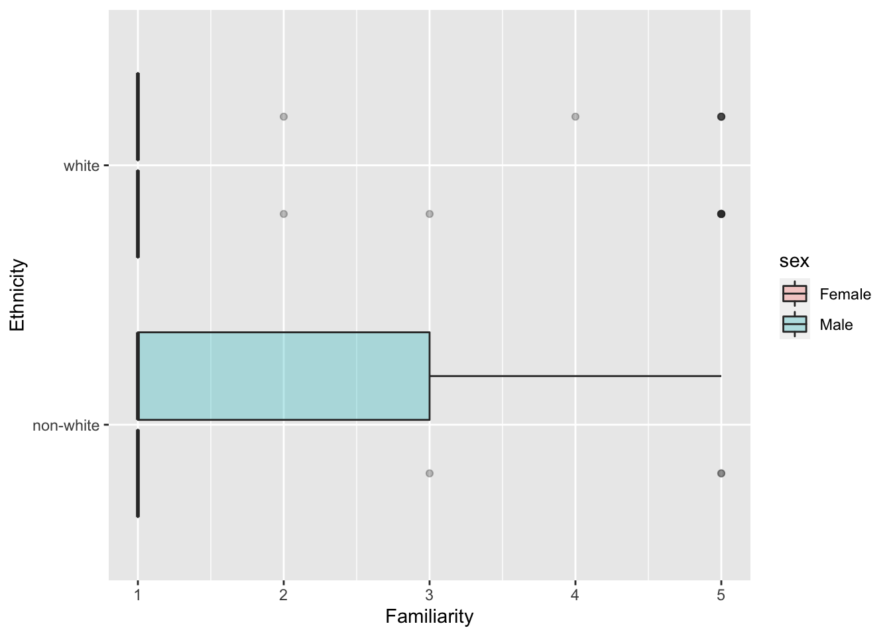
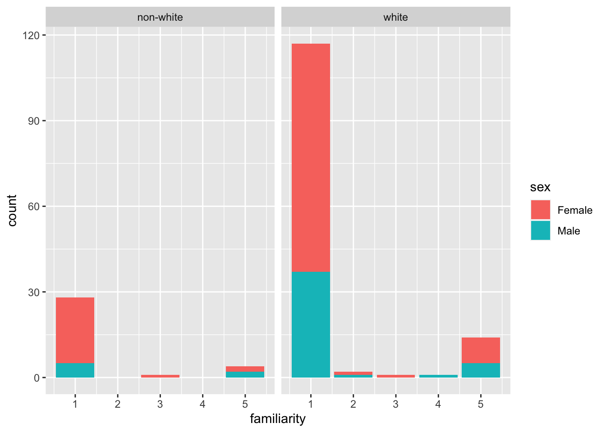

Lab 3
Data set description
1)
This data set was an experiment conducted by a linguist at the University of Minnesota with college student participants. The researcher wanted to determine what kind of music people listened to based on how familiar they were with African American English, as well as demographic data. The sample of students were chosen from linguistics, sociology, and music classes in the undergraduate college. There were 166 students included in the report of the research paper. Each participant was coded based on their demographic variables, social network variables, music variables including what genres they listened to regularly, as well as the response variables of familiarity with each vocabulary term.
2)
The rows of this data set consist of each word the linguist tested for each participant in the trial. So the reason there are so many rows is because each word is repeated 166 times for each participant. Additionally, there are 64 words that the researcher tested. So, this makes for a total of 10,624 rows.
3)
Missing values were replaced with mean values of these variables. A benefit of doing this would be that it doesn’t change the overall summary of these values in the data, since it is the mean, but it could be a drawback because it could be way off for that specific participant.
4)
Converting Characters to Factors:
hip_hop_clean <- hip_hop |>
mutate(across(where(is.character), as.factor))5)
hip_hop_clean |>
distinct(word, .keep_all = TRUE) |>
count()# A tibble: 1 × 1
n
<int>
1 64There are 64 AAE words studied in this data set.
6)
hip_hop_clean <- hip_hop_clean |>
mutate(ethnic_class = if_else(ethnic != "white", "non-white", "white"))7)
hip_hop_clean |>
distinct(subj, .keep_all = TRUE) |>
select(sex, age, ethnic) |>
summary() sex age ethnic
Female:117 Min. :16.00 white :135
Male : 51 1st Qu.:18.00 asian : 19
Median :19.00 african : 5
Mean :20.02 hispanic: 3
3rd Qu.:20.00 indian : 2
Max. :48.00 biracial: 1
(Other) : 3 In this particular study, there are 117 female participants and 51 male participants. The ages of participants range from 16 to 48, with the most common age being 19. In terms of ethnic groups, there are 135 white people, 19 Asian people, 5 African people, 3 Hispanic people, 2 Indian people, 1 biracial person, and 3 others.
8)
hip_hop_distinct |>
ggplot(mapping = aes(x = familiarity,
y = ethnic_class,
fill = sex)) +
geom_boxplot(alpha = 0.3) +
labs(y = "Ethnicity", x = "Familiarity")
hip_hop_distinct |>
ggplot(mapping = aes(x = familiarity, fill = sex)) +
geom_bar() +
facet_wrap(~ ethnic_class)
Familiar Words
People below age of 20
#most familiar
hip_hop_clean |>
filter(age < 20) |>
group_by(word) |>
summarize(mean = mean(familiarity)) |>
slice_max(mean)# A tibble: 1 × 2
word mean
<fct> <dbl>
1 off the hook 4.42#least familiar
hip_hop_clean |>
filter(age < 20) |>
group_by(word) |>
summarize(mean = mean(familiarity)) |>
slice_min(mean)# A tibble: 1 × 2
word mean
<fct> <dbl>
1 catch the vapors 1.03The most familiar term on average for people below the age of 20 was “off the hook”, and the least common term on average was “catch the vapors”.
Non-white women
#most familiar
hip_hop_clean |>
filter(ethnic_class == "non-white", sex == "Female") |>
group_by(word) |>
summarize(mean = mean(familiarity)) |>
slice_max(mean)# A tibble: 1 × 2
word mean
<fct> <dbl>
1 feel me 4.19#least familiar
hip_hop_clean |>
filter(ethnic_class == "non-white", sex == "Female") |>
group_by(word) |>
summarize(mean = mean(familiarity)) |>
slice_min(mean)# A tibble: 4 × 2
word mean
<fct> <dbl>
1 break someone out 1
2 dukey rope 1
3 plex 1
4 rollie 1The most commonly familiar term among non-white women in this study on average was “feel me” while the least commonly known terms on average were: “break someone out”, “dukey rope”, “plex, and”rollie”.
White men above the age of 30
#most familiar
hip_hop_clean |>
filter(ethnic_class == "white", sex == "Male", age > 30) |>
group_by(word) |>
summarize(mean = mean(familiarity)) |>
slice_max(mean)# A tibble: 1 × 2
word mean
<fct> <dbl>
1 5-0 4.2#least familiar
hip_hop_clean |>
filter(ethnic_class == "white", sex == "Male", age > 30) |>
group_by(word) |>
summarize(mean = mean(familiarity)) |>
slice_min(mean)# A tibble: 25 × 2
word mean
<fct> <dbl>
1 ay yo trip 1
2 beezy 1
3 break someone out 1
4 catch the vapors 1
5 crossroads 1
6 crump 1
7 dap 1
8 dollar cab 1
9 domino 1
10 duckets 1
# … with 15 more rowsThe most familiar term on average among the demographic of white men over 30 was “5-0” and there were 25 terms that were all equally unfamiliar among this age group, all with a familiarity score of 1.
Study Subjects
#the hunt for JB
hip_hop_clean |>
distinct(subj, .keep_all = TRUE) |>
filter(sex == "Male",
ethnic_class == "white",
age >= 17,
age <= 23,
city >= 10000,
city <= 60000,
bieber >= 4) |>
pull(subj)[1] p17
168 Levels: p1 p10 p101 p102 p103 p105 p106 p107 p108 p109 p11 p110 ... p99Participant 17 is Justin Bieber! This is the only participant that is a white male between the ages of 17 and 23 from a town with a population of between 10,000 and 60,000 people, and who knows at least 4 Justin Bieber songs.